Find
An expression you genuinely wanted to understand or use
AI-ASSISTED SENTENCE FLASHCARDS · WINDOWS 10/11
Language Miner is an AI-powered sentence flashcard generation and review app. Select a real expression in a book, webpage, or video to generate a reading, listening, or speaking card draft.
AI starts disconnected, and manual entry still works. Edit drafts in Document Reader and Life Mining; in Web Reader, check the result and reselect the sentence or phrase if it is not right.
Not sure which one to choose? Use the installer. This is the v0.1.0-beta.1 public beta. Cards and review work before you connect AI. See every step from install to first card
I’m running a little late.
Tell someone you will arrive a little late.
Isolated words easily lose their natural verb, preposition, tone, and situation. A real sentence keeps vocabulary, grammar, and context together. Recalling it before revealing the answer builds a route you can use when the moment arrives.
An expression you genuinely wanted to understand or use
Organize meaning, context, and sound for one skill
Recall before revealing the answer
Adapt it in speaking, writing, or Character Chat
Feed study-mission rewards into PlayZone progress
Web Reader does not create every type at once. Make only the card you need in its reading, listening, or speaking screen. Every image below is an actual app screen; select it to open the full-size version.
READING CARD
Select a real sentence in Document Reader or Web Reader, then check the meaning and context you wrote or AI helped draft.
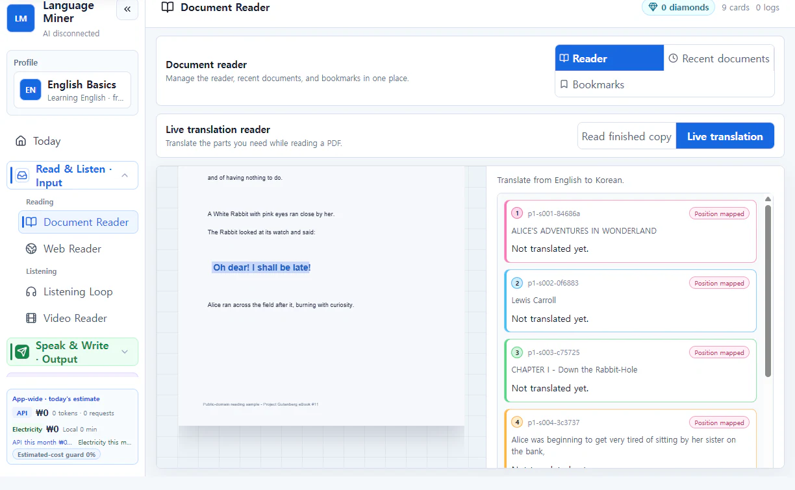
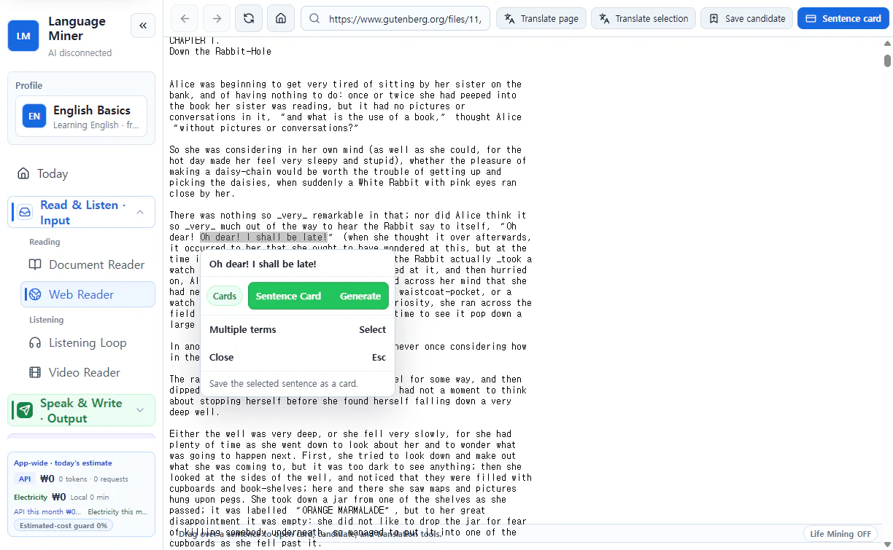
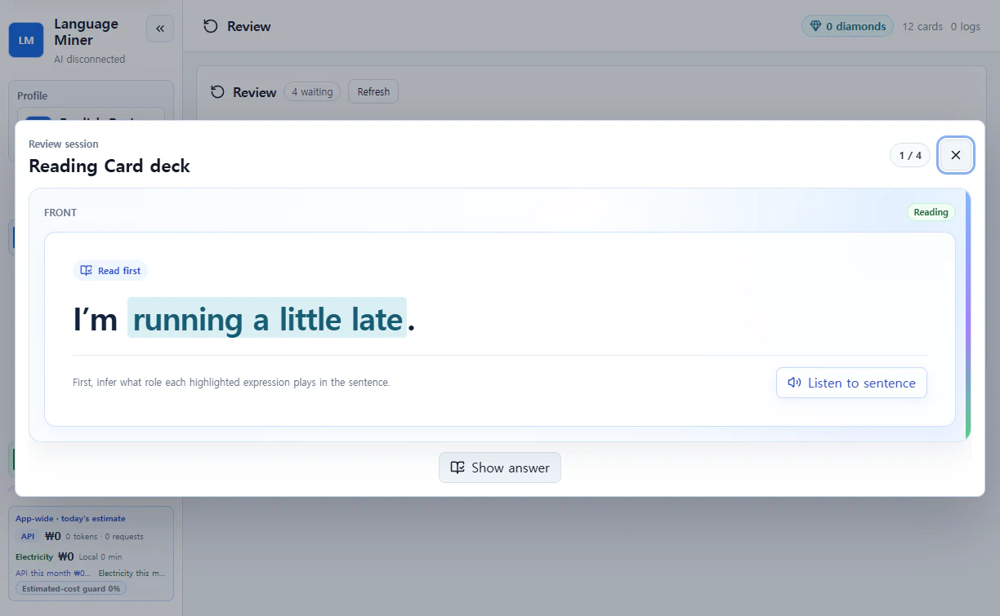
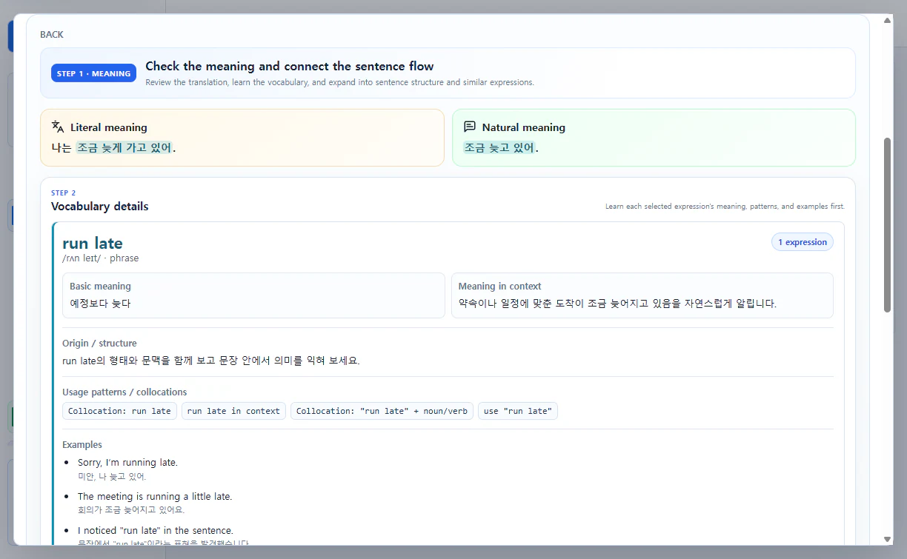
LISTENING CARD
Repeat a short section you could not catch in Listening Loop or Video Reader, then keep its sound and transcript together.
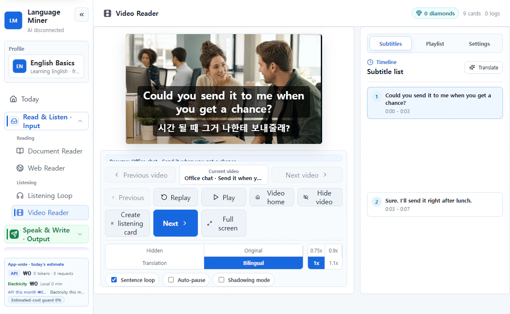
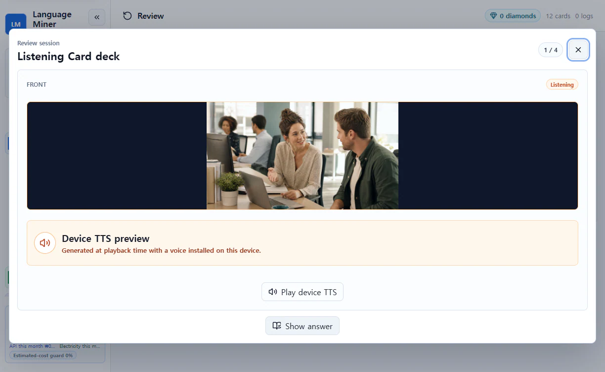
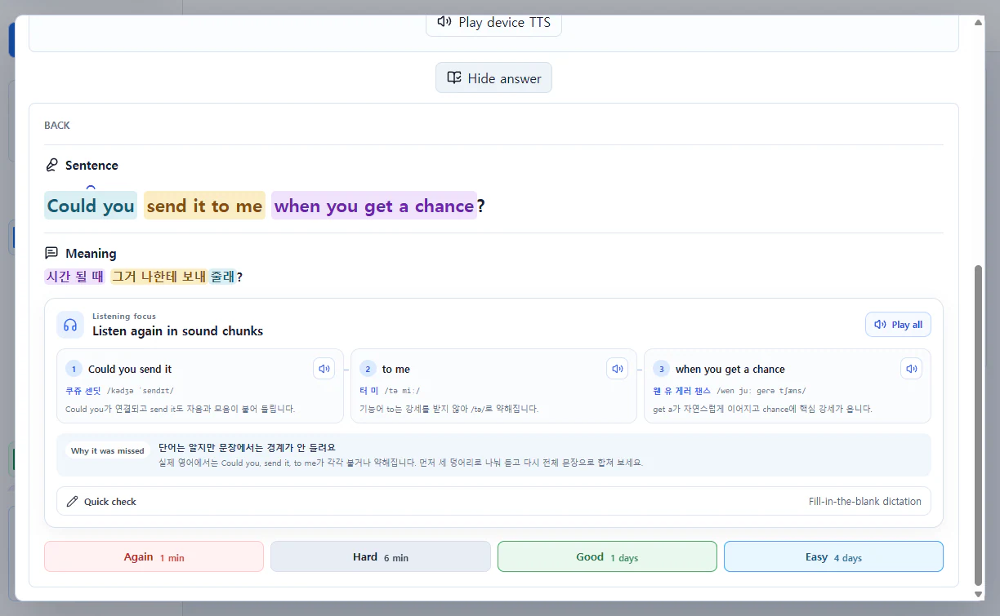
SPEAKING CARD
Add something you genuinely wanted to say to Life Mining, then check the natural-English draft and conversation context before saving.
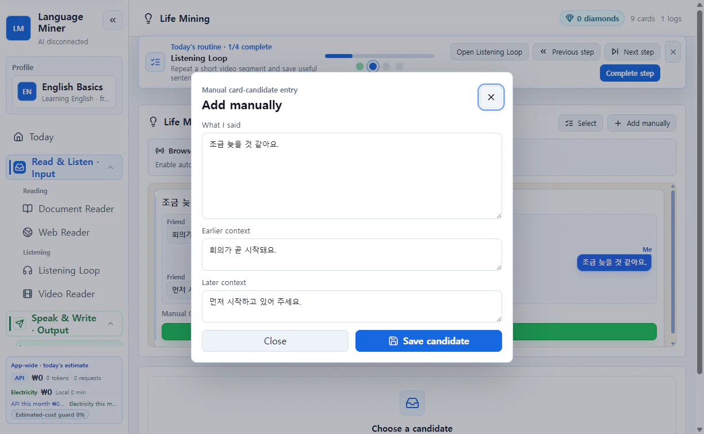
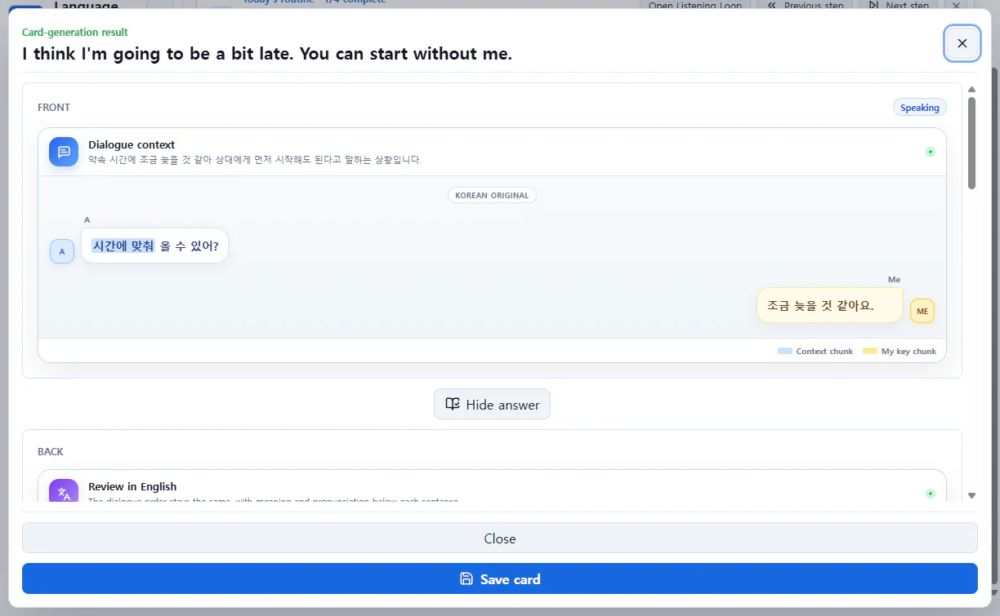
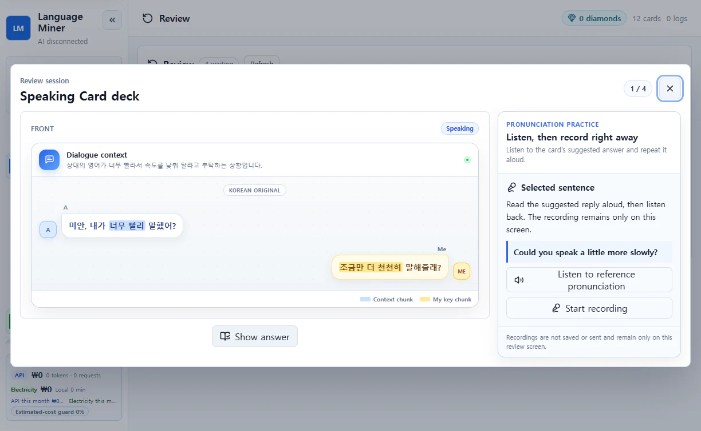
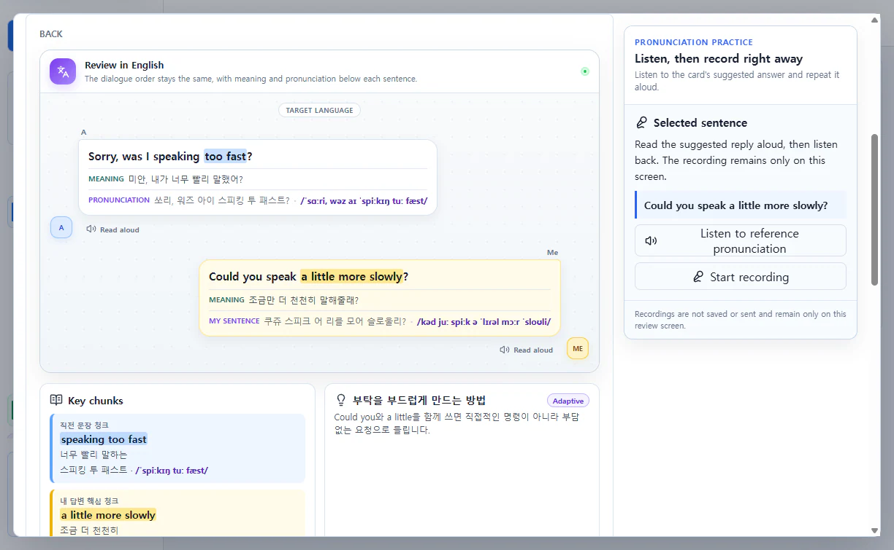
All three card types return on a review schedule. Try to retrieve the answer, reveal it, then rate how difficult it felt to set the next review time.


WRITING IS A SEPARATE PRACTICE
Far fewer general language learners need a dedicated long-form writing deck, so writing remains a flexible practice rather than a fourth card type. Produce a short sentence from the same meaning and inspect the local comparison when you need output practice.

Diamonds are not sold for money. Complete study missions and claim their rewards: make reading cards, listen, process speaking cards, review, or finish a writing check.
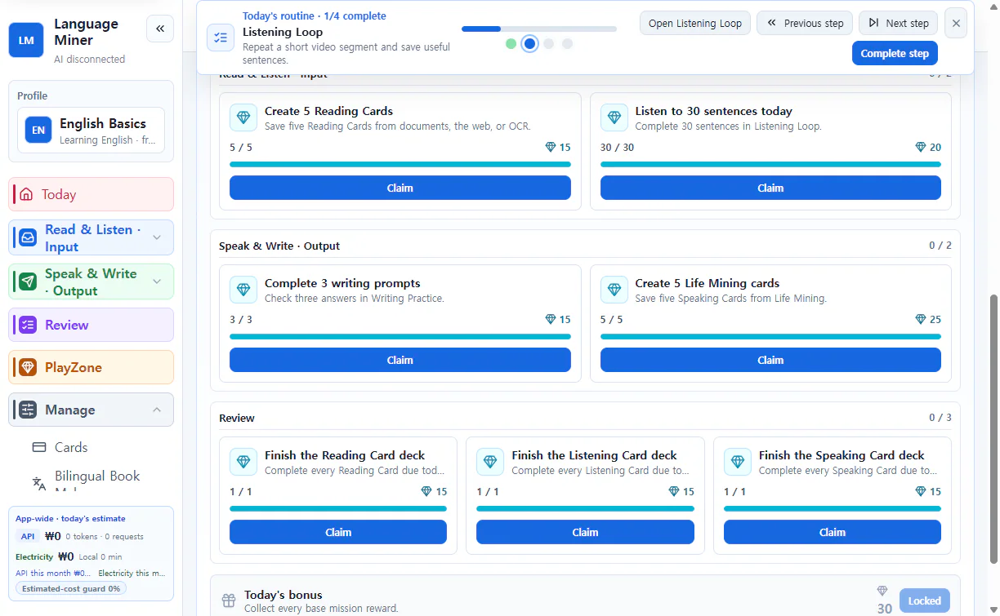
PLAYZONE
PlayZone does not turn saved phrases into in-game quizzes. Diamonds work like game currency for equipment, entry, convenience, or other progression choices declared by the creator.
It redirects the familiar “I wish I could pay a little to get stronger” feeling toward study. The goal is not to weaken games into dull educational exercises, but to connect enjoyable games to a useful reward for learning outside them.
Browse PlayZone gamesFile-working agents such as Codex and Claude Code can help people make a small web game without years of programming study. Language Miner gives that result a place to run, a way to share it, and a connection to study rewards.
CHARACTER CARDS
Define a name, personality, speaking style, situation, and expression images. Import a character someone shared, or export yours as a file and post its public link in the content hub.
Describe the personality and conversation background.
Start Character Chat with the AI connection you chose.
Export the character card and share its public link.
GAMEKIT + CODEX OR CLAUDE CODE
GameKit contains the rules for requesting diamonds and packaging a .lemgame file. Open the folder with an agent and describe the game and diamond-spending choices in ordinary language.
Download the GameKit folder from GitHub and extract it.
Let Codex or Claude Code read the included rules.
For example: “A cat explores a dungeon, and diamonds pay for revives.”
Choose controls, screens, difficulty, and diamond uses while the agent builds.
Drop it into PlayZone and post a public link in the content hub.

Browse games and characters made by other people, then add the file you want to the app.

YOUR FIRST 10 MINUTES
Cards and study history stay on this PC by default. AI starts disconnected, and you connect only the features you choose.
Cards and study history stay on this PC by default.
Connect local Ollama or your own cloud key only when needed.
For cloud AI, check the provider, content, and expected calls first.
Create a .lembackup and inspect what the restore preview includes.
DOWNLOAD FOR WINDOWS
Use the installer on a PC you plan to keep using. Choose portable to try the app without an installation wizard. Both buttons start the official release-file download directly.